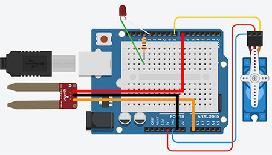

Arduino: Automatic Watering
This project is made to help auto water soil for plants. The sensor (the red and gold part) measures the moisture levels. Depending on the reading, the arduino will turn the servo (the part on the right of the diagram). If the moisture level is below a certain level (dry) the servo will turn the tube to allow water through. Once the moisture level is at a certain level (wet) the servo would turn back, pinching the tube so no water gets through.
As for the LED; it will be blinking with a 10 second delay when moisture levels are being calculated. While the arduino is watering the plant, the LED will remain on until the satisfied moisture is met. Only then the LED will turn back off and the cycle continues.